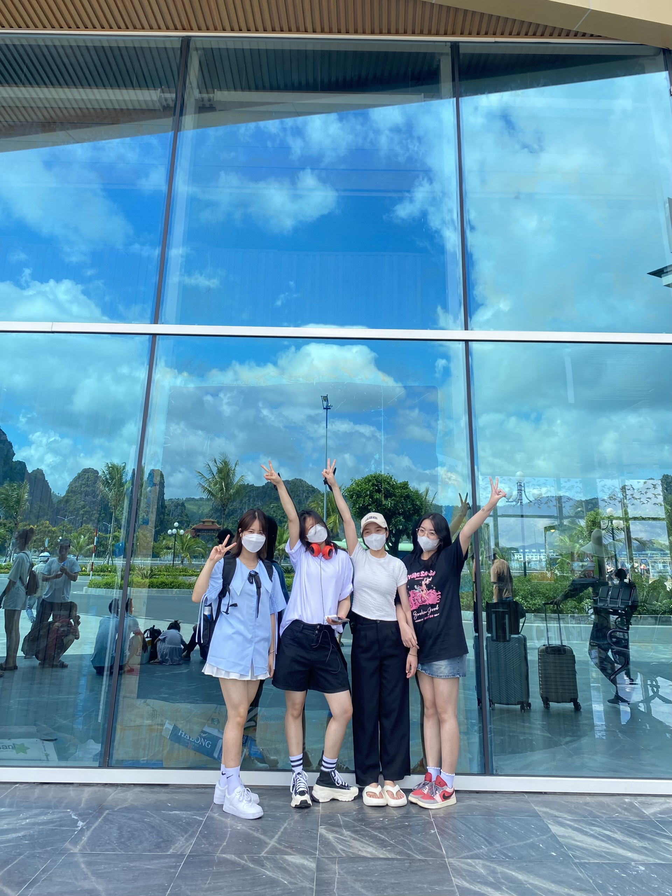
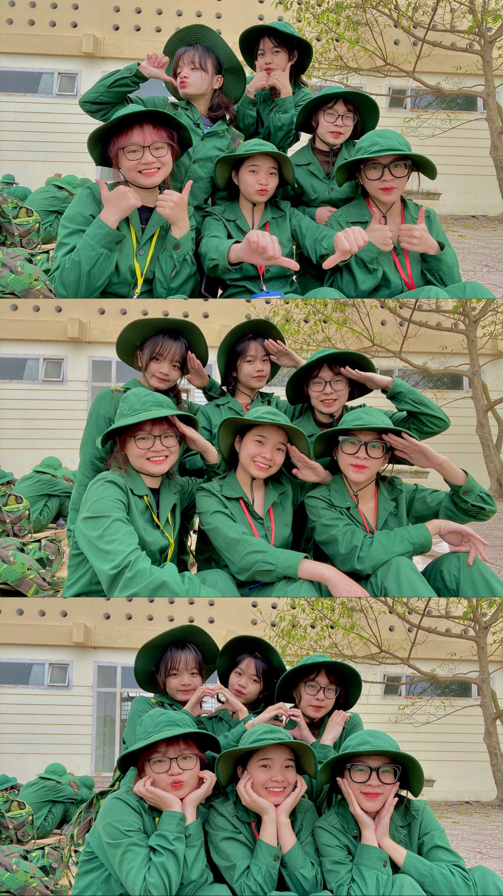

"Thư là đứa rất nhây, hay trêu trọc các bạn. Bạn luôn có mặt mỗi khi các bạn cần."

"Thư là một người rất có trách nhiệm. Bạn bắn súng rất giỏi và luôn hỗ trợ các bạn mỗi khi ai đó cần trợ giúp. ".

"Mình là bạn thân của Thư. Bề ngoài Thư trông rất mạnh mẽ nhưng nội tâm yếu đuối, rất giàu tình cảm, sống vì gia đình."